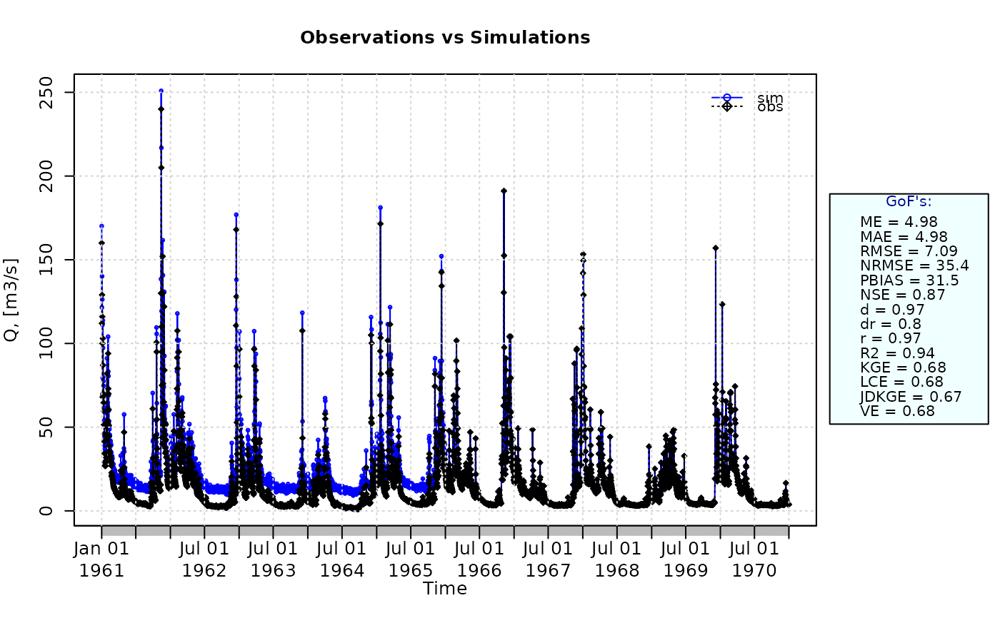

Numerical Goodness-of-fit measures
gof.RdNumerical goodness-of-fit measures between sim and obs, with treatment of missing values. Several performance indices for comparing two vectors, matrices or data.frames
Usage
gof(sim, obs, ...)
# Default S3 method
gof(sim, obs, na.rm=TRUE, do.spearman=FALSE, do.pbfdc=FALSE,
do.pmr=FALSE, j=1, lambda=0.95, norm="sd", s=c(1,1,1,1),
method=c("2009", "2012", "2021"), lQ.thr=0.6, hQ.thr=0.1, start.month=1,
k=NULL, min.years=5, days.per.year=365,
density.method=c("hist", "kde", "wasserstein"),
nbins="paper", timestep=86400, kde.n.grid=512, wasserstein.n.quantiles=512,
digits=2, fun=NULL, ...,
epsilon.type=c("none", "Pushpalatha2012", "otherFactor", "otherValue"),
epsilon.value=NA)
# S3 method for class 'matrix'
gof(sim, obs, na.rm=TRUE, do.spearman=FALSE, do.pbfdc=FALSE,
do.pmr=FALSE, j=1, lambda=0.95, norm="sd", s=c(1,1,1,1),
method=c("2009", "2012", "2021"), lQ.thr=0.6, hQ.thr=0.1, start.month=1,
k=NULL, min.years=5, days.per.year=365,
density.method=c("hist", "kde", "wasserstein"),
nbins="paper", timestep=86400, kde.n.grid=512, wasserstein.n.quantiles=512,
digits=2, fun=NULL, ...,
epsilon.type=c("none", "Pushpalatha2012", "otherFactor", "otherValue"),
epsilon.value=NA)
# S3 method for class 'data.frame'
gof(sim, obs, na.rm=TRUE, do.spearman=FALSE, do.pbfdc=FALSE,
do.pmr=FALSE, j=1, lambda=0.95, norm="sd", s=c(1,1,1,1),
method=c("2009", "2012", "2021"), lQ.thr=0.6, hQ.thr=0.1, start.month=1,
k=NULL, min.years=5, days.per.year=365,
density.method=c("hist", "kde", "wasserstein"),
nbins="paper", timestep=86400, kde.n.grid=512, wasserstein.n.quantiles=512,
digits=2, fun=NULL, ...,
epsilon.type=c("none", "Pushpalatha2012", "otherFactor", "otherValue"),
epsilon.value=NA)
# S3 method for class 'zoo'
gof(sim, obs, na.rm=TRUE, do.spearman=FALSE, do.pbfdc=FALSE,
do.pmr=FALSE, j=1, lambda=0.95, norm="sd", s=c(1,1,1,1),
method=c("2009", "2012", "2021"), lQ.thr=0.6, hQ.thr=0.1, start.month=1,
k=NULL, min.years=5, days.per.year=365,
density.method=c("hist", "kde", "wasserstein"),
nbins="paper", timestep=86400, kde.n.grid=512, wasserstein.n.quantiles=512,
digits=2, fun=NULL, ...,
epsilon.type=c("none", "Pushpalatha2012", "otherFactor", "otherValue"),
epsilon.value=NA)Arguments
- sim
numeric, zoo, matrix or data.frame with simulated values
- obs
numeric, zoo, matrix or data.frame with observed values
- na.rm
a logical value indicating whether 'NA' should be stripped before the computation proceeds.
When an 'NA' value is found at the i-th position inobsORsim, the i-th value ofobsANDsimare removed before the computation.- do.spearman
logical. Indicates if the Spearman correlation has to be computed. The default is FALSE.
- do.pbfdc
logical. Indicates if the Percent Bias in the Slope of the midsegment of the Flow Duration Curve (
pbiasfdc) has to be computed. The default is FALSE.- do.pmr
logical. Indicates if the Proxy for Model Robustness (
PMR) has to be computed. The default is FALSE.- j
- lambda
argument passed to the
wsNSEfunction.- norm
argument passed to the
nrmsefunction- s
argument passed to the
KGE,KGElf,sKGE,KGEkmandJDKGEfunctions. The fourth element insis only used in theJDKGEfunction; whileKGE,KGElf,sKGE, andKGEkmonly uses the first three elements ins.- method
argument passed to the
KGE,KGElf,sKGEandKGEkmfunctions.- lQ.thr
[OPTIONAL]. Only used for the computation of the
pbiasFDC %(with thepbiasfdcfunction) and the weighted seasonal Nash-Sutcliffe Efficiency (with thewsNSE function.- hQ.thr
[OPTIONAL]. Only used for the computation of the
pbiasFDC %(with thepbiasfdcfunction), the high flow bias (HFB, with theHFBfunction) and the weighted seasonal Nash-Sutcliffe Efficiency (with thewsNSE function.- start.month
[OPTIONAL]. Only used for the computation of the split KGE (
sKGE), annual peak flow bias (APFB) and high flow bias (HFB) when the (hydrological) year of interest is different from the calendar year.numeric in [1:12] indicating the starting month of the (hydrological) year. Numeric values in [1, 12] represent months in [January, December]. By default
start.month=1.- k
Only used for the computation of the Proxy for Model Robustness (
PMR).integer value representing the length of the moving window (number of time steps) used to compute the bias over sub-periods.
The k argument should reflect the temporal scale at which robustness is intended to be evaluated, and therefore depends primarily on the time resolution of the data. Royer-Gaspard et al. (2021) recommended to use multi-year windows, typically in the range of 3 to 5 years, to ensure that each sub-period captures meaningful hydroclimatic variability while still allowing enough windows for comparison.
- min.years
Only used for the computation of the Proxy for Model Robustness (
PMR).Numeric, only used when the user does not explicitly define the value of
k, i.e., whenk=NULL.Minimum numbers of years used to ensure that each sub-period used int eh computation of PMR captures meaningful hydroclimatic variability while still allowing enough windows for comparison. By default,
min.years=5.- days.per.year
Only used for the computation of the Proxy for Model Robustness (
PMR).Numeric, only used when the user does not explicitly define the value of
k, i.e., whenk=NULL.Number of days in a year. A value of Use 365.25 is recoomended instead of the default value of 365 when
simandobsare long climatological series.- density.method
Only used for the computation of the Joint Divergence Kling-Gupta Efficiency (
JDKGE).Character, representing the method used to compute the divergence component. "hist" uses the paper-faithful histogram-based Jensen-Shannon divergence, "kde" uses a common-grid kernel density estimate followed by Jensen-Shannon divergence, and "wasserstein" uses a Wasserstein-distance similarity on log-flows.
- nbins
Only used for the computation of the Joint Divergence Kling-Gupta Efficiency (
JDKGE).Character, representing the binning rule used by the histogram divergence component. The default "paper" uses the procedure described by Ficchi et al. (2026). This argument is ignored for
density.method="kde"anddensity.method="wasserstein".- timestep
Only used for the computation of the Joint Divergence Kling-Gupta Efficiency (
JDKGE).Numeric, representing the sampling time step in seconds used by the paper's bin-count adjustment. For
zooinputs this is inferred from the time index when omitted. The default for plain numeric vectors is one day (86400 seconds).- kde.n.grid
Only used for the computation of the Joint Divergence Kling-Gupta Efficiency (
JDKGE).Integer, number of grid points used when
density.method="kde". Larger values provide a finer common support grid at higher computational cost.- wasserstein.n.quantiles
Only used for the computation of the Joint Divergence Kling-Gupta Efficiency (
JDKGE).Integer, number of quantile levels used to approximate the first Wasserstein distance when
density.method="wasserstein". Larger values provide a finer approximation at higher computational cost.- digits
decimal places used for rounding the goodness-of-fit indexes.
- fun
function to be applied to
simandobsin order to obtain transformed values thereof before computing the all the goodness-of-fit functions.The first argument MUST BE a numeric vector with any name (e.g.,
x), and additional arguments are passed using....- ...
arguments passed to
fun, in addition to the mandatory first numeric vector.- epsilon.type
argument used to define a numeric value to be added to both
simandobsbefore applyingfun.It is was designed to allow the use of logarithm and other similar functions that do not work with zero values.
Valid values of
epsilon.typeare:1) "none":
simandobsare used byFUNwithout the addition of any nummeric value.2) "Pushpalatha2012": one hundredth (1/100) of the mean observed values is added to both
simandobsbefore applyingFUN, as described in Pushpalatha et al. (2012).3) "otherFactor": the numeric value defined in the
epsilon.valueargument is used to multiply the the mean observed values, instead of the one hundredth (1/100) described in Pushpalatha et al. (2012). The resulting value is then added to bothsimandobs, before applyingFUN.4) "otherValue": the numeric value defined in the
epsilon.valueargument is directly added to bothsimandobs, before applyingFUN.- epsilon.value
-) when
epsilon.type="otherValue"it represents the numeric value to be added to bothsimandobsbefore applyingfun.
-) whenepsilon.type="otherFactor"it represents the numeric factor used to multiply the mean of the observed values, instead of the one hundredth (1/100) described in Pushpalatha et al. (2012). The resulting value is then added to bothsimandobsbefore applyingfun.
Value
The output of the gof function is a matrix with one column only, and the following rows:
- ME
Mean Error
- MAE
Mean Absolute Error
- MSE
Mean Squared Error
- RMSE
Root Mean Square Error
- ubRMSE
Unbiased Root Mean Square Error
- NRMSE
Normalized Root Mean Square Error ( -100% <= NRMSE <= 100% )
- PBIAS
Percent Bias ( -Inf <= PBIAS <= Inf [%] )
- RSR
Ratio of RMSE to the Standard Deviation of the Observations, RSR = rms / sd(obs). ( 0 <= RSR <= +Inf )
- rSD
Ratio of Standard Deviations, rSD = sd(sim) / sd(obs)
- NSE
Nash-Sutcliffe Efficiency ( -Inf <= NSE <= 1 )
- mNSE
Modified Nash-Sutcliffe Efficiency ( -Inf <= mNSE <= 1 )
- rNSE
Relative Nash-Sutcliffe Efficiency ( -Inf <= rNSE <= 1 )
- wNSE
Weighted Nash-Sutcliffe Efficiency ( -Inf <= wNSE <= 1 )
- wsNSE
Weighted Seasonal Nash-Sutcliffe Efficiency ( -Inf <= wsNSE <= 1 )
- d
Index of Agreement ( 0 <= d <= 1 )
- dr
Refined Index of Agreement ( -1 <= dr <= 1 )
- md
Modified Index of Agreement ( 0 <= md <= 1 )
- rd
Relative Index of Agreement ( 0 <= rd <= 1 )
- cp
Persistence Index ( 0 <= cp <= 1 )
- r
Pearson Correlation coefficient ( -1 <= r <= 1 )
- R2
Coefficient of Determination ( 0 <= R2 <= 1 )
- bR2
R2 multiplied by the coefficient of the regression line between
simandobs
( 0 <= bR2 <= 1 )- VE
Volumetric efficiency between
simandobs
( -Inf <= VE <= 1)- KGE
Kling-Gupta efficiency between
simandobs
( -Inf <= KGE <= 1 )- KGElf
Kling-Gupta Efficiency for low values between
simandobs
( -Inf <= KGElf <= 1 )- KGEnp
Non-parametric version of the Kling-Gupta Efficiency between
simandobs
( -Inf <= KGEnp <= 1 )- KGEkm
Knowable Moments Kling-Gupta Efficiency between
simandobs
( -Inf <= KGEnp <= 1 )
The following outputs are only produced when both sim and obs are zoo objects with sub-annual temporal frequency:
- sKGE
Split Kling-Gupta Efficiency between
simandobs
( -Inf <= sKGE <= 1 )- APFB
Annual Peak Flow Bias ( 0 <= APFB <= Inf )
- HBF
High Flow Bias ( 0 <= HFB <= Inf )
The following outputs are only produced when defaul vlaues of a specific argument is changed by the user:
- r.Spearman
Spearman Correlation coefficient ( -1 <= r.Spearman <= 1 ). Only computed when
do.spearman=TRUE- pbiasfdc
PBIAS in the slope of the midsegment of the Flow Duration Curve. Only computed when
do.pbfdc=FALSE
References
Abbaspour, K.C.; Faramarzi, M.; Ghasemi, S.S.; Yang, H. (2009), Assessing the impact of climate change on water resources in Iran, Water Resources Research, 45(10), W10,434, doi:10.1029/2008WR007615.
Abbaspour, K.C., Yang, J. ; Maximov, I.; Siber, R.; Bogner, K.; Mieleitner, J. ; Zobrist, J.; Srinivasan, R. (2007), Modelling hydrology and water quality in the pre-alpine/alpine Thur watershed using SWAT, Journal of Hydrology, 333(2-4), 413-430, doi:10.1016/j.jhydrol.2006.09.014.
Box, G.E. (1966). Use and abuse of regression. Technometrics, 8(4), 625-629. doi:10.1080/00401706.1966.10490407.
Barrett, J.P. (1974). The coefficient of determination-some limitations. The American Statistician, 28(1), 19-20. doi:10.1080/00031305.1974.10479056.
Chai, T.; Draxler, R.R. (2014). Root mean square error (RMSE) or mean absolute error (MAE)? - Arguments against avoiding RMSE in the literature, Geoscientific Model Development, 7, 1247-1250. doi:10.5194/gmd-7-1247-2014.
Cinkus, G.; Mazzilli, N.; Jourde, H.; Wunsch, A.; Liesch, T.; Ravbar, N.; Chen, Z.; and Goldscheider, N. (2023). When best is the enemy of good - critical evaluation of performance criteria in hydrological models. Hydrology and Earth System Sciences 27, 2397-2411, doi:10.5194/hess-27-2397-2023.
Criss, R. E.; Winston, W. E. (2008), Do Nash values have value? Discussion and alternate proposals. Hydrological Processes, 22: 2723-2725. doi:10.1002/hyp.7072.
Entekhabi, D.; Reichle, R.H.; Koster, R.D.; Crow, W.T. (2010). Performance metrics for soil moisture retrievals and application requirements. Journal of Hydrometeorology, 11(3), 832-840. doi: 10.1175/2010JHM1223.1.
Fowler, K.; Coxon, G.; Freer, J.; Peel, M.; Wagener, T.; Western, A.; Woods, R.; Zhang, L. (2018). Simulating runoff under changing climatic conditions: A framework for model improvement. Water Resources Research, 54(12), 812-9832. doi:10.1029/2018WR023989.
Garcia, F.; Folton, N.; Oudin, L. (2017). Which objective function to calibrate rainfall-runoff models for low-flow index simulations?. Hydrological sciences journal, 62(7), 1149-1166. doi:10.1080/02626667.2017.1308511.
Garrick, M.; Cunnane, C.; Nash, J.E. (1978). A criterion of efficiency for rainfall-runoff models. Journal of Hydrology 36, 375-381. doi:10.1016/0022-1694(78)90155-5.
Gupta, H.V.; Kling, H.; Yilmaz, K.K.; Martinez, G.F. (2009). Decomposition of the mean squared error and NSE performance criteria: Implications for improving hydrological modelling. Journal of hydrology, 377(1-2), 80-91. doi:10.1016/j.jhydrol.2009.08.003. ISSN 0022-1694.
Gupta, H.V.; Kling, H. (2011). On typical range, sensitivity, and normalization of Mean Squared Error and Nash-Sutcliffe Efficiency type metrics. Water Resources Research, 47(10). doi:10.1029/2011WR010962.
Hahn, G.J. (1973). The coefficient of determination exposed. Chemtech, 3(10), 609-612. Aailable online at: https://www2.hawaii.edu/~cbaajwe/Ph.D.Seminar/Hahn1973.pdf.
Hodson, T.O. (2022). Root-mean-square error (RMSE) or mean absolute error (MAE): when to use them or not, Geoscientific Model Development, 15, 5481-5487, doi:10.5194/gmd-15-5481-2022.
Hundecha, Y., Bardossy, A. (2004). Modeling of the effect of land use changes on the runoff generation of a river basin through parameter regionalization of a watershed model. Journal of hydrology, 292(1-4), 281-295. doi:10.1016/j.jhydrol.2004.01.002.
Kitanidis, P.K.; Bras, R.L. (1980). Real-time forecasting with a conceptual hydrologic model. 2. Applications and results. Water Resources Research, Vol. 16, No. 6, pp. 1034:1044. doi:10.1029/WR016i006p01034.
Kling, H.; Fuchs, M.; Paulin, M. (2012). Runoff conditions in the upper Danube basin under an ensemble of climate change scenarios. Journal of Hydrology, 424, 264-277, doi:10.1016/j.jhydrol.2012.01.011.
Knoben, W.J.; Freer, J.E.; Woods, R.A. (2019). Inherent benchmark or not? Comparing Nash-Sutcliffe and Kling-Gupta efficiency scores. Hydrology and Earth System Sciences, 23(10), 4323-4331. doi:10.5194/hess-23-4323-2019.
Krause, P.; Boyle, D.P.; Base, F. (2005). Comparison of different efficiency criteria for hydrological model assessment, Advances in Geosciences, 5, 89-97. doi:10.5194/adgeo-5-89-2005.
Krstic, G.; Krstic, N.S.; Zambrano-Bigiarini, M. (2016). The br2-weighting Method for Estimating the Effects of Air Pollution on Population Health. Journal of Modern Applied Statistical Methods, 15(2), 42. doi:10.22237/jmasm/1478004000
Legates, D.R.; McCabe, G. J. Jr. (1999), Evaluating the Use of "Goodness-of-Fit" Measures in Hydrologic and Hydroclimatic Model Validation, Water Resour. Res., 35(1), 233-241. doi:10.1029/1998WR900018.
Ling, X.; Huang, Y.; Guo, W.; Wang, Y.; Chen, C.; Qiu, B.; Ge, J.; Qin, K.; Xue, Y.; Peng, J. (2021). Comprehensive evaluation of satellite-based and reanalysis soil moisture products using in situ observations over China. Hydrology and Earth System Sciences, 25(7), 4209-4229. doi:10.5194/hess-25-4209-2021.
Mizukami, N.; Rakovec, O.; Newman, A.J.; Clark, M.P.; Wood, A.W.; Gupta, H.V.; Kumar, R.: (2019). On the choice of calibration metrics for "high-flow" estimation using hydrologic models, Hydrology Earth System Sciences 23, 2601-2614, doi:10.5194/hess-23-2601-2019.
Moriasi, D.N.; Arnold, J.G.; van Liew, M.W.; Bingner, R.L.; Harmel, R.D.; Veith, T.L. (2007). Model evaluation guidelines for systematic quantification of accuracy in watershed simulations. Transactions of the ASABE. 50(3):885-900
Nash, J.E. and Sutcliffe, J.V. (1970). River flow forecasting through conceptual models. Part 1: a discussion of principles, Journal of Hydrology 10, pp. 282-290. doi:10.1016/0022-1694(70)90255-6.
Pearson, K. (1920). Notes on the history of correlation. Biometrika, 13(1), 25-45. doi:10.2307/2331722.
Pfannerstill, M.; Guse, B.; Fohrer, N. (2014). Smart low flow signature metrics for an improved overall performance evaluation of hydrological models. Journal of Hydrology, 510, 447-458. doi:10.1016/j.jhydrol.2013.12.044.
Pizarro, A.; Jorquera, J. (2024). Advancing objective functions in hydrological modelling: Integrating knowable moments for improved simulation accuracy. Journal of Hydrology, 634, 131071. doi:10.1016/j.jhydrol.2024.131071.
Pool, S.; Vis, M.; Seibert, J. (2018). Evaluating model performance: towards a non-parametric variant of the Kling-Gupta efficiency. Hydrological Sciences Journal, 63(13-14), pp.1941-1953. doi:/10.1080/02626667.2018.1552002.
Pushpalatha, R.; Perrin, C.; Le Moine, N.; Andreassian, V. (2012). A review of efficiency criteria suitable for evaluating low-flow simulations. Journal of Hydrology, 420, 171-182. doi:10.1016/j.jhydrol.2011.11.055.
Santos, L.; Thirel, G.; Perrin, C. (2018). Pitfalls in using log-transformed flows within the KGE criterion. doi:10.5194/hess-22-4583-2018.
Schaefli, B., Gupta, H. (2007). Do Nash values have value?. Hydrological Processes 21, 2075-2080. doi:10.1002/hyp.6825.
Schober, P.; Boer, C.; Schwarte, L.A. (2018). Correlation coefficients: appropriate use and interpretation. Anesthesia and Analgesia, 126(5), 1763-1768. doi:10.1213/ANE.0000000000002864.
Schuol, J.; Abbaspour, K.C.; Srinivasan, R.; Yang, H. (2008b), Estimation of freshwater availability in the West African sub-continent using the SWAT hydrologic model, Journal of Hydrology, 352(1-2), 30, doi:10.1016/j.jhydrol.2007.12.025
Sorooshian, S., Q. Duan, and V. K. Gupta. (1993). Calibration of rainfall-runoff models: Application of global optimization to the Sacramento Soil Moisture Accounting Model, Water Resources Research, 29 (4), 1185-1194, doi:10.1029/92WR02617.
Spearman, C. (1961). The Proof and Measurement of Association Between Two Things. In J. J. Jenkins and D. G. Paterson (Eds.), Studies in individual differences: The search for intelligence (pp. 45-58). Appleton-Century-Crofts. doi:10.1037/11491-005
Tang, G.; Clark, M.P.; Papalexiou, S.M. (2021). SC-earth: a station-based serially complete earth dataset from 1950 to 2019. Journal of Climate, 34(16), 6493-6511. doi:10.1175/JCLI-D-21-0067.1.
Yapo P.O.; Gupta H.V.; Sorooshian S. (1996). Automatic calibration of conceptual rainfall-runoff models: sensitivity to calibration data. Journal of Hydrology. v181 i1-4. 23-48. doi:10.1016/0022-1694(95)02918-4
Yilmaz, K.K., Gupta, H.V. ; Wagener, T. (2008), A process-based diagnostic approach to model evaluation: Application to the NWS distributed hydrologic model, Water Resources Research, 44, W09417, doi:10.1029/2007WR006716.
Willmott, C.J. (1981). On the validation of models. Physical Geography, 2, 184–194. doi:10.1080/02723646.1981.10642213.
Willmott, C.J. (1984). On the evaluation of model performance in physical geography. Spatial Statistics and Models, G. L. Gaile and C. J. Willmott, eds., 443-460. doi:10.1007/978-94-017-3048-8_23.
Willmott, C.J.; Ackleson, S.G. Davis, R.E.; Feddema, J.J.; Klink, K.M.; Legates, D.R.; O'Donnell, J.; Rowe, C.M. (1985), Statistics for the Evaluation and Comparison of Models, J. Geophys. Res., 90(C5), 8995-9005. doi:10.1029/JC090iC05p08995.
Willmott, C.J.; Matsuura, K. (2005). Advantages of the mean absolute error (MAE) over the root mean square error (RMSE) in assessing average model performance, Climate Research, 30, 79-82, doi:10.3354/cr030079.
Willmott, C.J.; Matsuura, K.; Robeson, S.M. (2009). Ambiguities inherent in sums-of-squares-based error statistics, Atmospheric Environment, 43, 749-752, doi:10.1016/j.atmosenv.2008.10.005.
Willmott, C.J.; Robeson, S.M.; Matsuura, K. (2012). A refined index of model performance. International Journal of climatology, 32(13), pp.2088-2094. doi:10.1002/joc.2419.
Willmott, C.J.; Robeson, S.M.; Matsuura, K.; Ficklin, D.L. (2015). Assessment of three dimensionless measures of model performance. Environmental Modelling & Software, 73, pp.167-174. doi:10.1016/j.envsoft.2015.08.012
Zambrano-Bigiarini, M.; Bellin, A. (2012). Comparing goodness-of-fit measures for calibration of models focused on extreme events. EGU General Assembly 2012, Vienna, Austria, 22-27 Apr 2012, EGU2012-11549-1.
Note
obs and sim has to have the same length/dimension.
Missing values in obs and/or sim can be removed before the computations, depending on the value of na.rm.
Although r and r2 have been widely used for model evaluation, these statistics are over-sensitive to outliers and insensitive to additive and proportional differences between model predictions and measured data (Legates and McCabe, 1999)
Examples
##################
# Example 1: basic ideal case
obs <- 1:10
sim <- 1:10
gof(sim, obs)
#> [,1]
#> ME 0
#> MAE 0
#> MSE 0
#> RMSE 0
#> ubRMSE 0
#> NRMSE % 0
#> PBIAS % 0
#> RSR 0
#> rSD 1
#> NSE 1
#> mNSE 1
#> rNSE 1
#> wNSE 1
#> wsNSE 1
#> d 1
#> dr 1
#> md 1
#> rd 1
#> cp 1
#> r 1
#> R2 1
#> bR2 1
#> VE 1
#> KGE 1
#> KGElf 1
#> KGEnp 1
#> KGEkm 1
#> JDKGE 1
#> LME 1
#> LCE 1
obs <- 1:10
sim <- 2:11
gof(sim, obs)
#> [,1]
#> ME 1.00
#> MAE 1.00
#> MSE 1.00
#> RMSE 1.00
#> ubRMSE 0.00
#> NRMSE % 33.00
#> PBIAS % 18.20
#> RSR 0.33
#> rSD 1.00
#> NSE 0.88
#> mNSE 0.60
#> rNSE 0.43
#> wNSE 0.88
#> wsNSE 0.65
#> d 0.97
#> dr 0.80
#> md 0.80
#> rd 0.86
#> cp 0.00
#> r 1.00
#> R2 0.88
#> bR2 0.77
#> VE 0.82
#> KGE 0.82
#> KGElf 0.60
#> KGEnp 0.81
#> KGEkm 0.81
#> JDKGE 0.81
#> LME 0.82
#> LCE 0.82
##################
# Example 2:
# Loading daily streamflows of the Ega River (Spain), from 1961 to 1970
data(EgaEnEstellaQts)
obs <- EgaEnEstellaQts
# Generating a simulated daily time series, initially equal to the observed series
sim <- obs
# Computing the 'gof' for the "best" (unattainable) case
gof(sim=sim, obs=obs)
#> [,1]
#> ME 0
#> MAE 0
#> MSE 0
#> RMSE 0
#> ubRMSE 0
#> NRMSE % 0
#> PBIAS % 0
#> RSR 0
#> rSD 1
#> NSE 1
#> mNSE 1
#> rNSE 1
#> wNSE 1
#> wsNSE 1
#> d 1
#> dr 1
#> md 1
#> rd 1
#> cp 1
#> r 1
#> R2 1
#> bR2 1
#> VE 1
#> KGE 1
#> KGElf 1
#> KGEnp 1
#> KGEkm 1
#> JDKGE 1
#> LME 1
#> LCE 1
#> sKGE 1
#> APFB 0
#> HFB 0
##################
# Example 3: gof for simulated values equal to observations plus random noise
# on the first half of the observed values.
# This random noise has more relative importance for low flows than
# for medium and high flows.
# Randomly changing the first 1826 elements of 'sim', by using a normal distribution
# with mean 10 and standard deviation equal to 1 (default of 'rnorm').
sim[1:1826] <- obs[1:1826] + rnorm(1826, mean=10)
ggof(sim, obs)

gof(sim=sim, obs=obs)
#> [,1]
#> ME 4.98
#> MAE 4.98
#> MSE 50.20
#> RMSE 7.09
#> ubRMSE 5.04
#> NRMSE % 35.40
#> PBIAS % 31.50
#> RSR 0.35
#> rSD 1.03
#> NSE 0.87
#> mNSE 0.61
#> rNSE -0.55
#> wNSE 0.98
#> wsNSE 0.76
#> d 0.97
#> dr 0.80
#> md 0.80
#> rd 0.63
#> cp 0.47
#> r 0.97
#> R2 0.87
#> bR2 0.78
#> VE 0.68
#> KGE 0.68
#> KGElf 0.51
#> KGEnp 0.63
#> KGEkm 0.66
#> JDKGE 0.67
#> LME 0.68
#> LCE 0.68
#> sKGE 0.65
#> APFB 0.03
#> HFB 0.08
##################
# Example 4: gof for simulated values equal to observations plus random noise
# on the first half of the observed values and applying (natural)
# logarithm to 'sim' and 'obs' during computations.
gof(sim=sim, obs=obs, fun=log)
#> [,1]
#> ME 0.42
#> MAE 0.42
#> MSE 0.48
#> RMSE 0.69
#> ubRMSE 0.55
#> NRMSE % 72.00
#> PBIAS % 18.70
#> RSR 0.72
#> rSD 0.88
#> NSE 0.48
#> mNSE 0.48
#> rNSE -4.40
#> wNSE 0.74
#> wsNSE 0.78
#> d 0.86
#> dr 0.74
#> md 0.74
#> rd -0.44
#> cp -7.93
#> r 0.82
#> R2 0.48
#> bR2 0.43
#> VE 0.81
#> KGE 0.72
#> KGElf 0.51
#> KGEnp 0.74
#> KGEkm 0.73
#> JDKGE 0.70
#> LME 0.67
#> LCE 0.66
#> sKGE 0.47
#> APFB 0.01
#> HFB 0.02
# Verifying the previous value:
lsim <- log(sim)
lobs <- log(obs)
gof(sim=lsim, obs=lobs)
#> [,1]
#> ME 0.42
#> MAE 0.42
#> MSE 0.48
#> RMSE 0.69
#> ubRMSE 0.55
#> NRMSE % 72.00
#> PBIAS % 18.70
#> RSR 0.72
#> rSD 0.88
#> NSE 0.48
#> mNSE 0.48
#> rNSE -4.40
#> wNSE 0.74
#> wsNSE 0.78
#> d 0.86
#> dr 0.74
#> md 0.74
#> rd -0.44
#> cp -7.93
#> r 0.82
#> R2 0.48
#> bR2 0.43
#> VE 0.81
#> KGE 0.72
#> KGElf 0.41
#> KGEnp 0.74
#> KGEkm 0.73
#> JDKGE 0.70
#> LME 0.67
#> LCE 0.66
#> sKGE 0.69
#> APFB 0.01
#> HFB 0.02
##################
# Example 5: gof for simulated values equal to observations plus random noise
# on the first half of the observed values and applying (natural)
# logarithm to 'sim' and 'obs' and adding the Pushpalatha2012 constant
# during computations
gof(sim=sim, obs=obs, fun=log, epsilon.type="Pushpalatha2012")
#> [,1]
#> ME 0.41
#> MAE 0.41
#> MSE 0.46
#> RMSE 0.68
#> ubRMSE 0.54
#> NRMSE % 71.50
#> PBIAS % 18.10
#> RSR 0.72
#> rSD 0.89
#> NSE 0.49
#> mNSE 0.48
#> rNSE -2.03
#> wNSE 0.74
#> wsNSE 0.78
#> d 0.86
#> dr 0.74
#> md 0.74
#> rd 0.19
#> cp -7.67
#> r 0.83
#> R2 0.49
#> bR2 0.44
#> VE 0.82
#> KGE 0.72
#> KGElf 0.52
#> KGEnp 0.74
#> KGEkm 0.74
#> JDKGE 0.72
#> LME 0.68
#> LCE 0.67
#> sKGE 0.53
#> APFB 0.01
#> HFB 0.02
# Verifying the previous value, with the epsilon value following Pushpalatha2012
eps <- mean(obs, na.rm=TRUE)/100
lsim <- log(sim+eps)
lobs <- log(obs+eps)
gof(sim=lsim, obs=lobs)
#> [,1]
#> ME 0.41
#> MAE 0.41
#> MSE 0.46
#> RMSE 0.68
#> ubRMSE 0.54
#> NRMSE % 71.50
#> PBIAS % 18.10
#> RSR 0.72
#> rSD 0.89
#> NSE 0.49
#> mNSE 0.48
#> rNSE -2.03
#> wNSE 0.74
#> wsNSE 0.78
#> d 0.86
#> dr 0.74
#> md 0.74
#> rd 0.19
#> cp -7.67
#> r 0.83
#> R2 0.49
#> bR2 0.44
#> VE 0.82
#> KGE 0.72
#> KGElf 0.49
#> KGEnp 0.75
#> KGEkm 0.74
#> JDKGE 0.71
#> LME 0.68
#> LCE 0.67
#> sKGE 0.70
#> APFB 0.01
#> HFB 0.02
if (FALSE) { # \dontrun{
##################
# Example 6: gof for simulated values equal to observations plus random noise
# on the first half of the observed values and applying (natural)
# logarithm to 'sim' and 'obs' and adding a user-defined constant
# during computations
eps <- 0.01
gof(sim=sim, obs=obs, fun=log, epsilon.type="otherValue", epsilon.value=eps)
# Verifying the previous value:
lsim <- log(sim+eps)
lobs <- log(obs+eps)
gof(sim=lsim, obs=lobs)
##################
# Example 7: gof for simulated values equal to observations plus random noise
# on the first half of the observed values and applying (natural)
# logarithm to 'sim' and 'obs' and using a user-defined factor
# to multiply the mean of the observed values to obtain the constant
# to be added to 'sim' and 'obs' during computations
fact <- 1/50
gof(sim=sim, obs=obs, fun=log, epsilon.type="otherFactor", epsilon.value=fact)
# Verifying the previous value:
eps <- fact*mean(obs, na.rm=TRUE)
lsim <- log(sim+eps)
lobs <- log(obs+eps)
gof(sim=lsim, obs=lobs)
##################
# Example 8: gof for simulated values equal to observations plus random noise
# on the first half of the observed values and applying a
# user-defined function to 'sim' and 'obs' during computations
fun1 <- function(x) {sqrt(x+1)}
gof(sim=sim, obs=obs, fun=fun1)
# Verifying the previous value, with the epsilon value following Pushpalatha2012
sim1 <- sqrt(sim+1)
obs1 <- sqrt(obs+1)
gof(sim=sim1, obs=obs1)
# Storing a matrix object with all the GoFs:
g <- gof(sim, obs)
# Getting only the RMSE
g[4,1]
g["RMSE",]
# Writing all the GoFs into a TXT file
write.table(g, "GoFs.txt", col.names=FALSE, quote=FALSE)
# Getting the graphical representation of 'obs' and 'sim' along with the
# numeric goodness of fit
ggof(sim=sim, obs=obs)
} # }